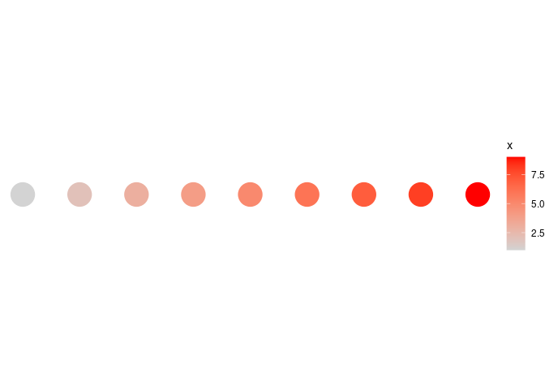
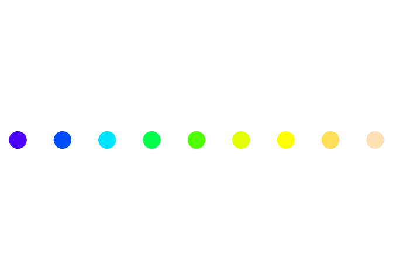

library(ggplot2)
library(dichromat)
## palettes etc.
library(viridis)
library(cividis)
library(colorspace)
library(RColorBrewer)
library(cowplot)dd <- data.frame(x=1:9)
ggplot(dd,aes(x=x,y=1,alpha=x))+
geom_point(size=10,colour="red")+
coord_fixed(ratio=5)+theme_void()ggplot(dd,aes(x=x,y=1))+
geom_point(size=10,aes(colour=x))+
scale_colour_gradient(low="lightgray",high="red")+
coord_fixed(ratio=5)+theme_void()
display.brewer.all()Old Faithful data (duration vs waiting time)


png("pix/colordemo.png")
par(mfrow = c(3, 3))
cl <- sequential_hcl(5, "Heat")
for (i in c("map", "heatmap", "scatter", "spine",
"bar", "pie", "perspective", "mosaic", "lines")) {
demoplot(cl, type = i)
}
dev.off()
## png
## 2
Why stick to the outside of the colour space?
par(mfrow=c(2,2))
p <- brewer.pal("Set1",n=6)
pie(rep(1,6), col=p)
pie(rep(1,6), col = dichromat(p))
p2 <- brewer.pal("Dark2",n=6)
pie(rep(1,6), col=p2)
pie(rep(1,6), col = dichromat(p2))upload an image or point to a URL
Colour appearance depends on neighbours


ggplot(dd,aes(x=x,y=1,colour=factor(x))) +
geom_point(size=10)+
coord_fixed(ratio=5)+
theme(legend.position="none")+
scale_colour_manual(values=topo.colors(9))
Zeileis, Achim, Jason C. Fisher, Kurt Hornik, Ross Ihaka, Claire D. McWhite, Paul Murrell, Reto Stauffer, and Claus O. Wilke. 2019. “Colorspace: A Toolbox for Manipulating and Assessing Colors and Palettes.” arXiv:1903.06490 \[Cs, Stat\], March. http://arxiv.org/abs/1903.06490.
Zeileis, Achim, Kurt Hornik, and Paul Murrell. 2009. “Escaping RGBland: Selecting Colors for Statistical Graphics.” Computational Statistics & Data Analysis 53 (9): 3259–70. https://doi.org/10.1016/j.csda.2008.11.033.